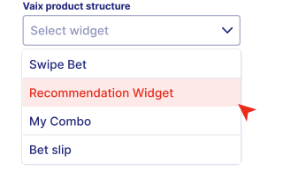
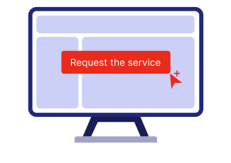
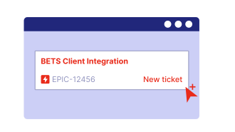
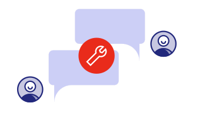
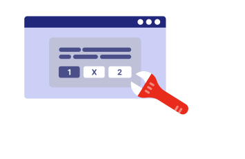

SETUP FLOW
Highlights, Bet Slip, Swipe Bet, Event List, My Combo, and Markets Widgets





1 · SALES REPS · SALESFORCE ACCOUNT LEVEL
Recommendation Widget
Create a new opportunity with a Quote where the respective Recommendation Widget is selected.
Bet Recommendations Widgets are listed under the “Vaix product structure”. To choose a particular Widget, the respective Vaix module needs to be selected first.
2 · SALES REPS · JIRA SERVICE REQUEST CREATION
Request the service / “Service Administration” button.
Define a function (Pre-Sales Trial, Post-Sales Integration).
This will then trigger an automatic process that will create two Jira tickets on the SF level and assign them to the responsible teams:
Trial phase lasts for 90 days and only one prolongation is possible (28 days).
3 · BETI TEAM · INTERNAL INITIATIVE / EPIC
When a Service Request ticket is received, BETI team needs to create a new Initiative / Epic in the BETI Jira Project; detailed instructions can be found here.
After the Epic is created, the automation will automatically create tickets for the following tasks:
4 · ADDITIONAL · COMMUNICATION CHANNEL CREATION
BETI team will establish a shared Slack channel, including the Sales director and Sales support specialist for the initial setup phase.
Either Sales director or Sales support specialist will invite members from the client’s team to kick-off the setup process.
Both the SR technical team and the client’s technical team will be included in the channel to monitor the progress of technical development.
Requests to add external people to Slack channels can be made here.
5 · BETI TEAM · INTERNAL DEVELOPMENT
BETI team and engineering team (Uroš Uršej) will delegate the created tasks and monitor the progress, which is visible on the following Jira Board.